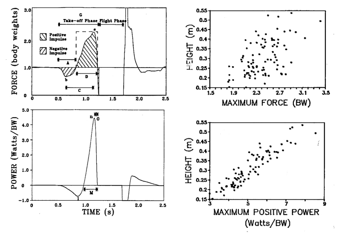

Importance of Instantaneous Power
Performance in athletic events is enhanced by the power of the athlete. Not all activities require the same type of power and there are three separate tests to measure the three most important types of power.
Types of Power
1) Aerobic Power - the maximum steady-state rate that an endurance athlete can convert oxygen to mechanical work. It is usually measured by VO2 max, distance covered in a 12 minute run, etc.
2) Anaerobic Power - the maximum rate that a sprint athlete can convert CP/ATP stores to mechanical work. It is usually measured by a 30 second Wingate test, 400 meter sprint time, etc.
3) Instantaneous Power - the maximum product of force and velocity that a ballistic athlete can perform. It is usually measured by vertical jump height or other "explosive movement tasks".
The first two types of power are average powers and involve the calculation of work or oxygen consumed over a finite period of time but the third type is instantanoeous (see Power for more details on the difference). Another important difference is the controversy over the use of the term "Instantaneous Power" when measureing ballistic performance.
Adamson and Whitney (1971) wrote: "The conclusion of this dissertation must be that power in the strict mechanical sense, will not be a useful parameter of impulsive muscle action. The real measure of action is the F.t impulse itself and the manner in which co-ordinated muscle actions can generate the largest possible impulse. There is the almost intuitive objection that instantaneous velocity of movement of the centre of mass is not due to the current force but to the preceeding force-time integral".
We know that vertical jump performance and all ballistic or explosive movements are dependent on the final velocity and, therefore, the impulse of the movement (see Impulse for more detail) but coaches and athletes have known for a long time that aerobic and even anaerobic power are not good predictors of ballistic performance. Tasks like the vertical jump are better but are we using the wrong term if we call this measure Instantaneous power or peak power?
Dowling and Vamos (1993) looked at many kinematic, kinetic, and temporal predictors of vertical jump performance. adamson and Whitney had suggested that peak force, or the ratio of negative to positive impulse or even the shape of the positive impulse phase would all be better related to jump height than peak instatanoeus power. The graphs on the right show a typical force-time and power-time plots of a subject performing a standard vertical jump. The labels refer to the various kinematic, temporal and kinetic predictors that Dowling and Vamos measured on dozens of jumpers of varying abilities. Thr graphs on the left show the scatterplots of peak force and peak power with jump height. In spite of Adamson and Whitney's assertion, the only predictor that had a strong relationship with jump height was peak instantaneous power.

Since the relationship is so strong, peak power is not a bad term to use for ballistic performance but why is peak power so closely related to impulse? Adamson and Whitney certainly didn't think it would be. To answer that question, we must look at patterns of acceleration. In the example shown below, two toy trains are released at the same time. The far train is allowed to roll down a straight incline while the near train rolls down a curved path. The curved path is greater than the 45 degree incline at the beginning of the descent but it is less than 45 degrees near the end. Both trains start from the same height, the curved path is longer than the incline yet the train following the curved path reaches the bottom first. Can you explain that?